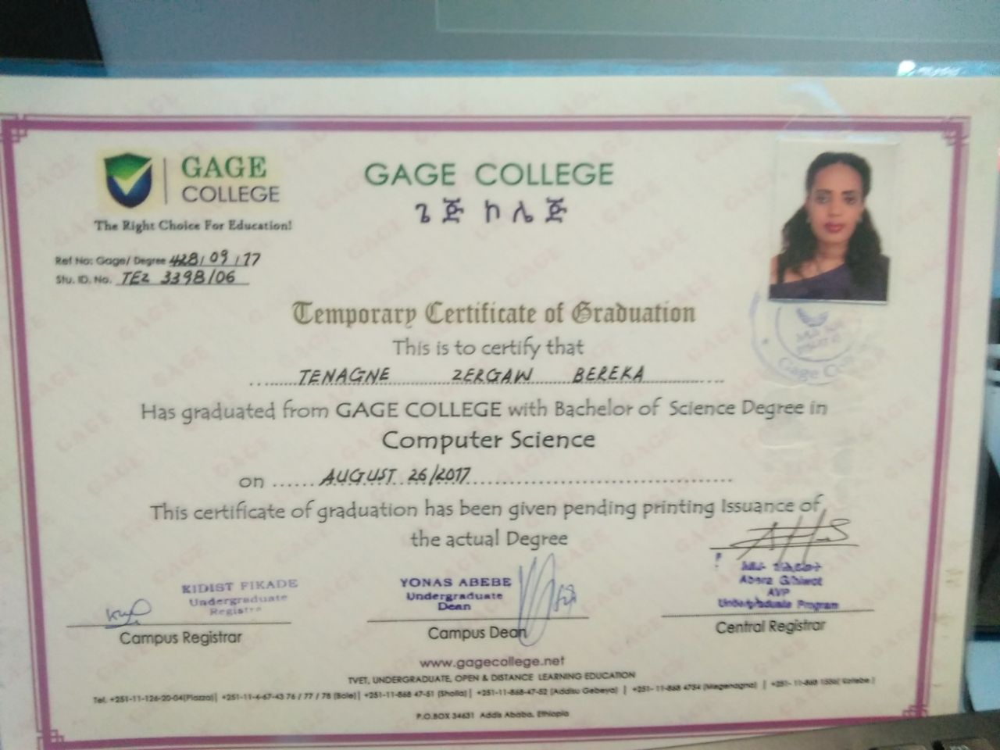
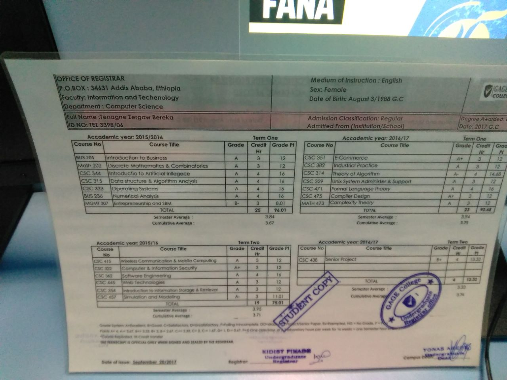
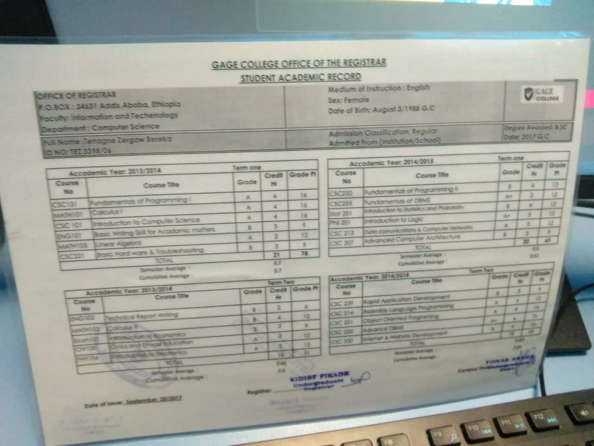
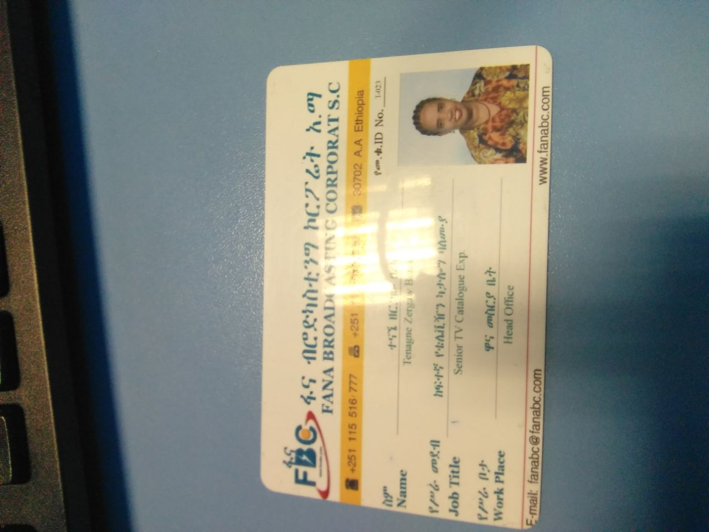
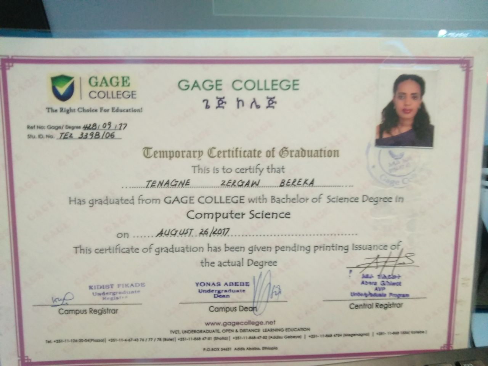
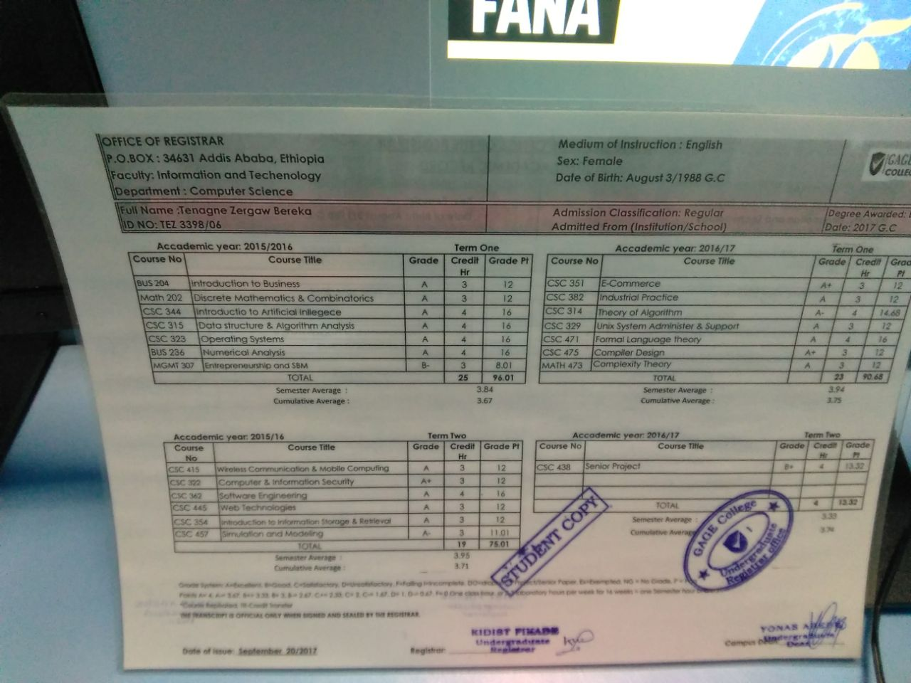
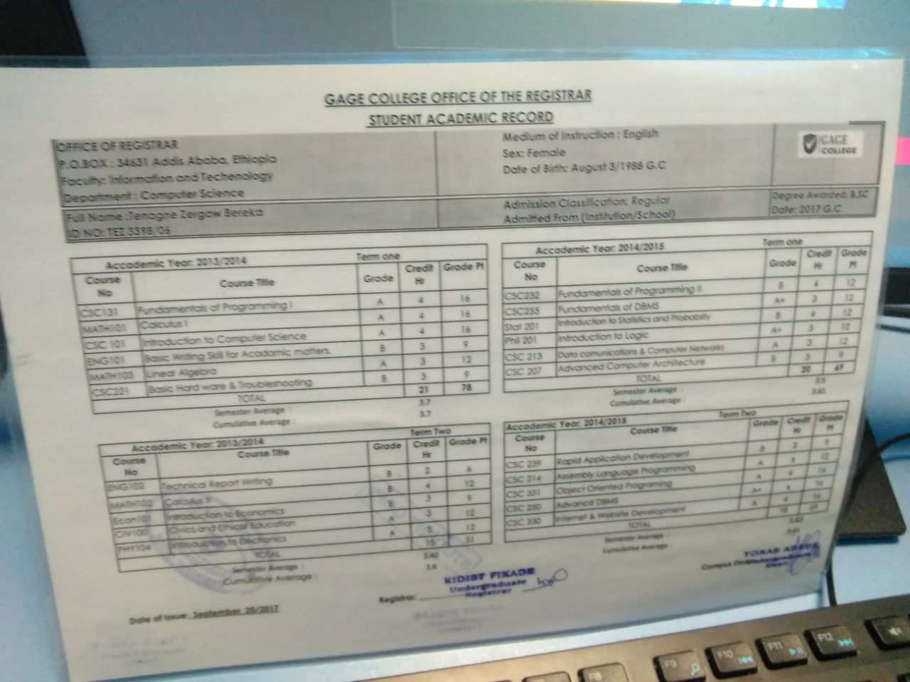
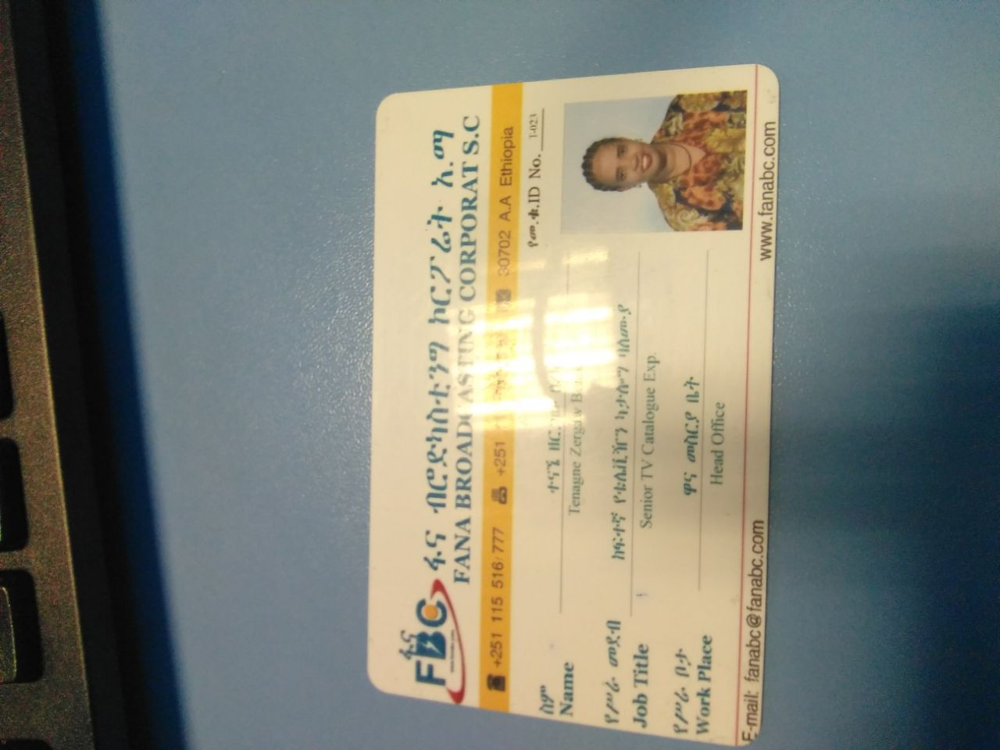

Professional Summary
Experienced Computer Science Professional with a passion for technology and innovation...
 







Experienced Computer Science Professional with a passion for technology and innovation...
Jan 2019 - Present
University of GAGE, 2017